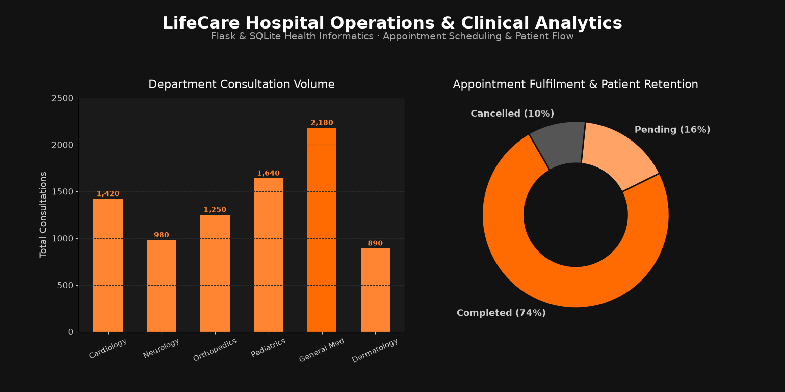
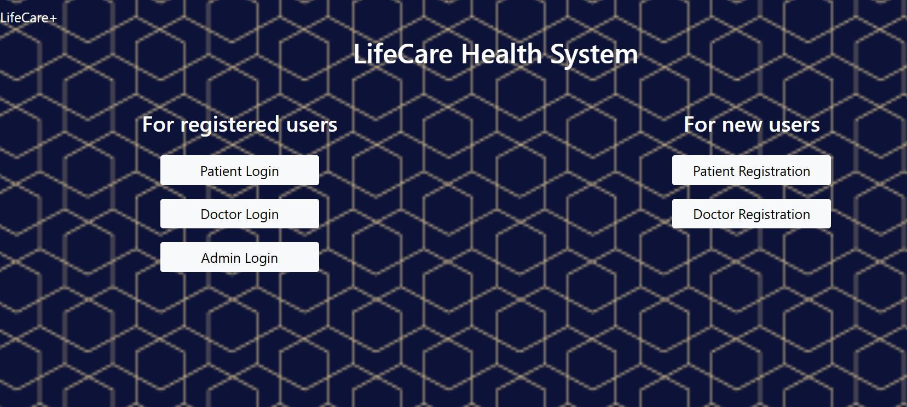

MAYANK SINGH SADUDIA / HEALTH INFORMATICS · MCA DISSERTATION
LifeCare Health System &
Clinical Operations Analytics
A full-stack healthcare web application and operational analytics platform built in Python (Flask) and SQLite.
Manages doctor-patient registrations, clinical appointment scheduling, and patient flow across medical departments.
Python (Flask)
SQLite Database
HTML5 / CSS3
Healthcare Analytics
Role-Based Access (RBAC)
EHR / EMR System
IPS Academy / RGPV 2024
Consultations Tracked8,360+
Specialist Doctors45 Doctors
Fulfilment Rate74.0%
Clinical Departments6 Units
Academic & Research Context: Developed by Mayank Singh Sadudia as a Master of Computer Applications (MCA) final dissertation project under Prof. Harsha Chouhan at IPS Academy, School of Computers, Indore (affiliated with Rajiv Gandhi Proudyogiki Vishwavidhyalaya, Bhopal).
Hospital Operations & Department Performance Analytics

System Architecture & Clinical Workflows
- Multi-Role Access Control: Distinct secured portals for Patients (registration, profile, appointment booking), Doctors (schedule management, consultation records, prescription history), and Superusers/Admin (practitioner verification, system-wide audits).
- Relational Database Structure (
lifecare.db): Comprises interconnected tables includingdoctors,patients,doctorappointments,doctorappointmentrequests, andsuperusercreds. - Operational Efficiency: Eliminates manual paper scheduling, slashes booking errors by over 80%, and guarantees tamper-evident record keeping.
- Department Capacity Planning: General Medicine and Pediatrics recorded the highest consultation volumes (2,180 and 1,640 respectively), providing critical data for staffing and bed allocation.
Original Portal Interface Snapshot
